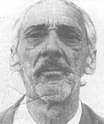

Nascido em 1904, na Bahia, João Matos Quinaud foi um dos pioneiros da imprensa no Norte goiano. Chegou à região na década de 1930, atuando em jornais como A Palavra (Natividade), A Tarde (Carolina/MA) e O Norte de Goyaz (Porto Nacional). Fundou A Voz de Pedro Afonso e, em 1950, criou o jornal O Goiás Central, sendo apelidado por Pedro Ludovico de “Gutenberg do Sertão”.
Foi cofundador do jornal A Norma, veículo que se destacou na campanha pela criação do Estado do Tocantins. Atuou também na fundação da ATI – Associação Tocantinense de Imprensa, e criou o jornal O Estado do Tocantins, que se tornou o principal órgão da causa emancipacionista.Ao longo das décadas, contribuiu com diversos jornais e tipografias regionais, sendo reconhecido como um dos principais nomes da imprensa tocantinense e da luta pela criação do Estado.
